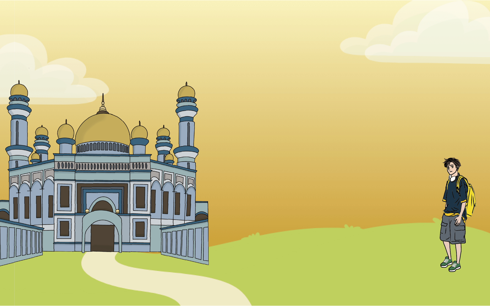
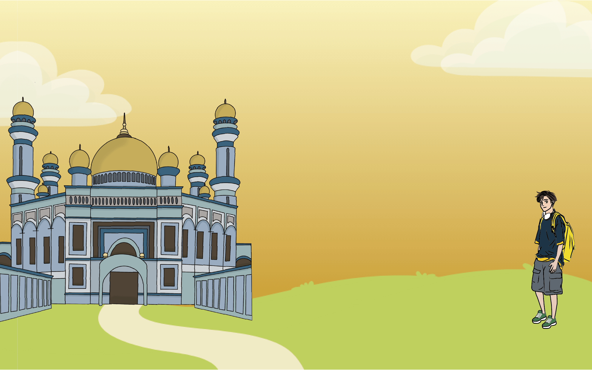
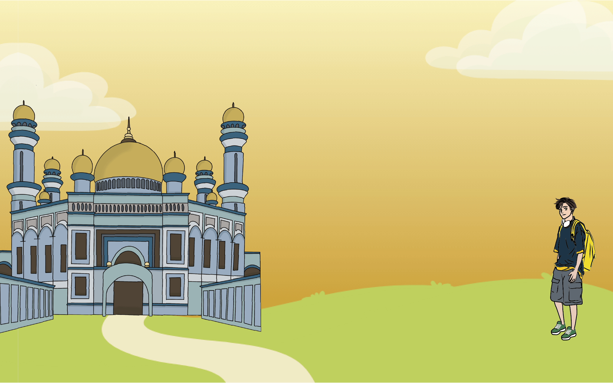
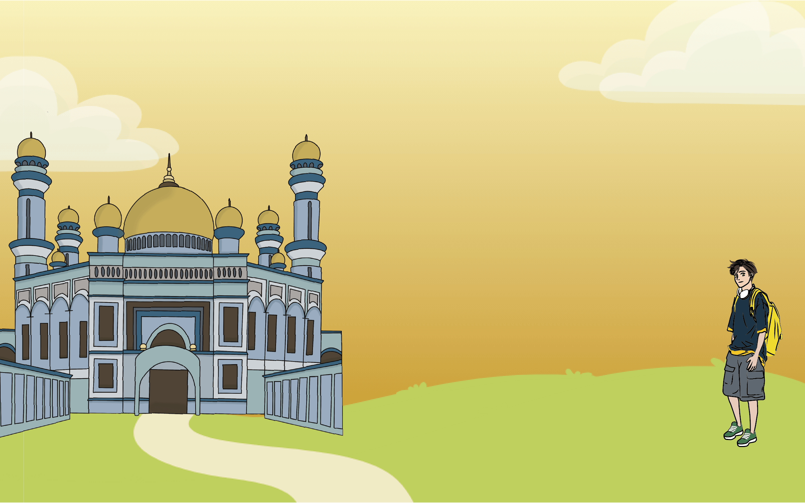
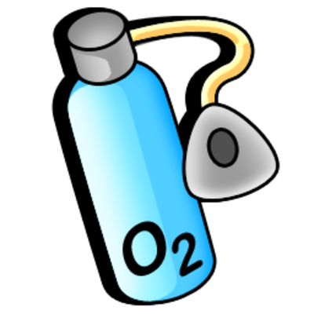

汶萊Brunei
 



冷知識
這裡整理了一些汶萊特別的冷知識，希望你會喜歡
冷知識 Fun Facts
黃金
汶萊蓋房子喜歡用黃金，走在街上很容易被各類建築上閃耀的金光刺得睜不開眼
醫療
汶萊人到醫院只交1文元（1：0.75美金）掛號費，看病、吃藥、住院國家全包，如果在國內治不好，還可以轉到發達國家免費治療
治安
汶萊治安狀況良好，有「和平之邦」的美譽
小偷
汶萊的小偷很少，因為當地對小偷懲罰很嚴厲，只要偷的東西超過一百美元，就要被執行砍手指
氧氣
汶萊屬熱帶雨林氣候，終年炎熱多雨，森林覆蓋率占國土面積的45%，空氣非常新鮮，有東南亞氧吧之稱
相關網站
以下是我們資料來源的相關網站，有興趣的話也可以去看看喔
參考網站介紹
其他內容
我們參考了許多相關網站內容來豐富這個網站的資訊，我們已將非官方內容放在參考資料中，歡迎大家前往瀏覽
訪談影片
我們訪談了一些當地人，他們分享了許多當地人才知道的內容，非常感謝他們的幫助
汶萊訪談影片
 冷知識
冷知識
 相關網站
相關網站
 訪談影片
訪談影片